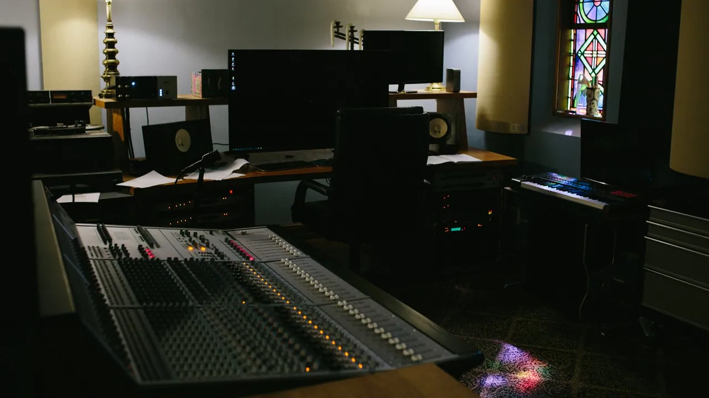
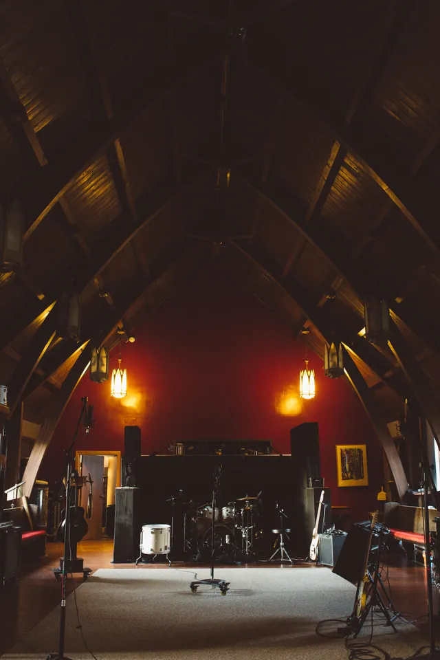
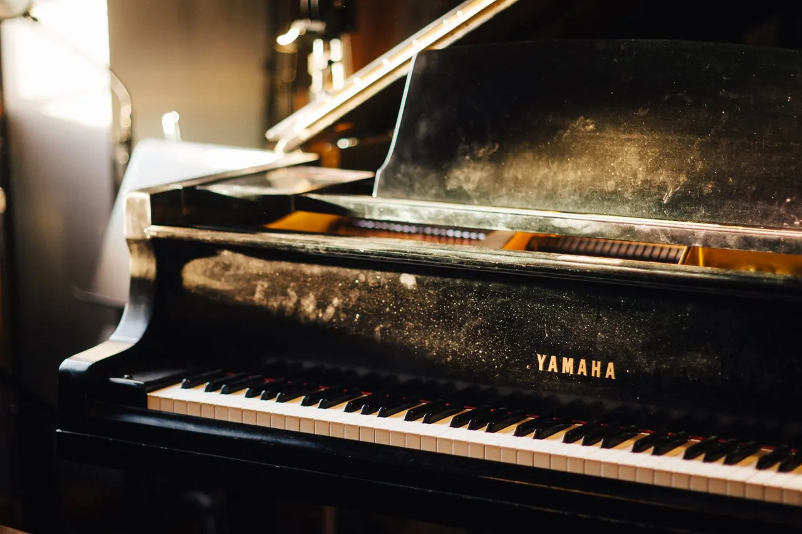
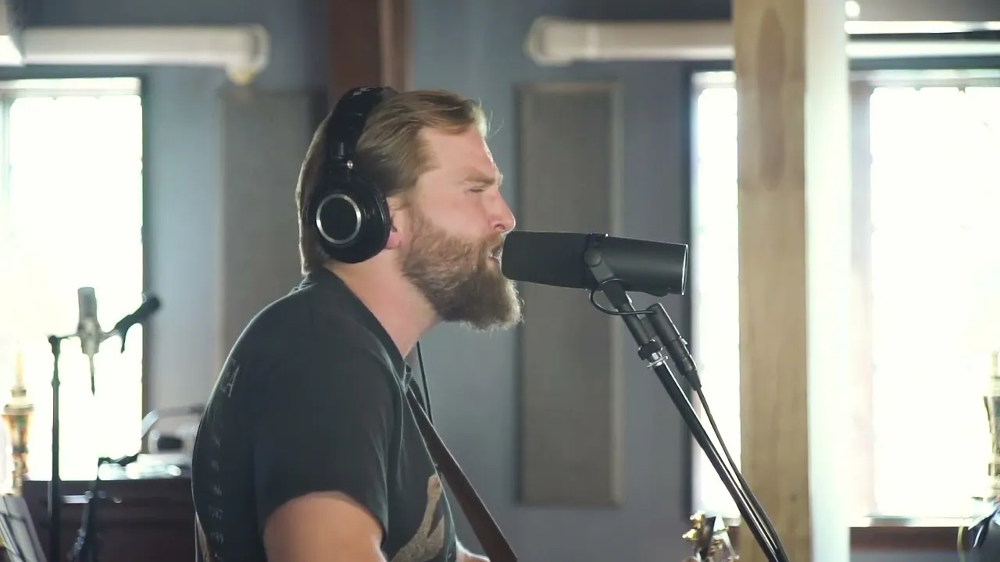
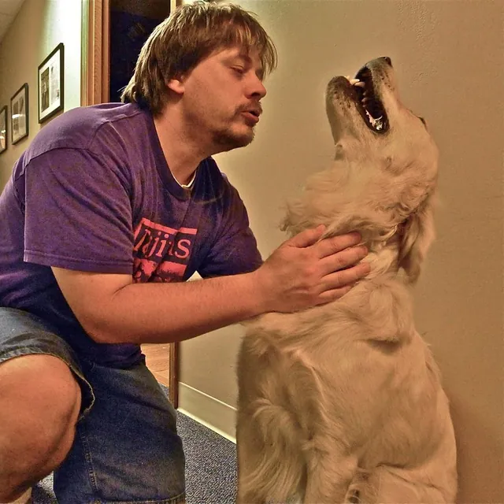

Recording
Track live, isolate a vocal, or re-amp a guitar through the room. Work with an in-house producer or bring your own.
Plan a recording session
A converted church.
A Pittsburgh recording studio.
Recording, mixing & mastering
Step insideWood underfoot. Thirty feet of air above you. A former neighborhood church, built to carry sound, now made for capturing yours.
The old Overbrook Presbyterian Church is home to two studios, a dedicated mastering suite and a collection of instruments with stories of their own. Bring your band, your producer, your unfinished idea.
Explore the studios
Follow the sound from the first take to the final master. Each space has a part to play.


Loading the spatial study…
Give the performance some air.
An 1,800-square-foot live room beneath a 30-foot wooden cathedral ceiling. Track together, find separation in the isolation booths, and shape the take through a modified Neve V3.
From the band in the room to a mix made elsewhere. Come in at the point your record needs us.
Track live, isolate a vocal, or re-amp a guitar through the room. Work with an in-house producer or bring your own.
Plan a recording sessionBring your sessions or send your tracks. Explore the Neve console in Studio A or the outboard chain in Studio B.
Talk about your mixA dedicated listening room and analog chain with Garrett Haines of Treelady Mastering. The final perspective on your record.
Contact Garrett
A Yamaha C7 grand. A Wurlitzer 200. A Rhodes Mark I. Hammond organs, vintage amps and a mic locker that invites a little experimentation.
Find the instrument that changes the song. Then put it in a room that lets it speak.
Open the equipment listCharles Wesley Godwin & The Allegheny High, performing “The Jealous Kind” live at The Church.

“The Jealous Kind” · Live From The Church
Video: Louie Nice. Source: the artist’s official YouTube channel.
The video connects to YouTube only when you choose to load it.
People who care about the record as much as you do, from the first conversation to the last listen.

Owner, engineer, mixer & producer
A Berklee Music Production graduate, Dana built The Church around the character of analog recording and the freedom of a comfortable creative space.
Talk to Dana
Mastering engineer, Treelady Mastering
Garrett brings an independent set of ears to the finishing stage, working in a purpose-built suite with carefully tuned monitoring and a dedicated analog chain.
Talk to GarrettThe instruments, the light, the spaces between takes. A closer look at life inside The Church.
Tell us what you’re working on. We’ll talk rooms, rates and availability.
412 818 1307info@thechurchrecordingstudio.com2020 Dartmore StreetA visit starts with a conversation. Get in touch to arrange a studio tour.
Open it in your email app, or copy the message and email it to info@thechurchrecordingstudio.com.
Your inquiry has not been sent. Send it from your email app to reach the studio.